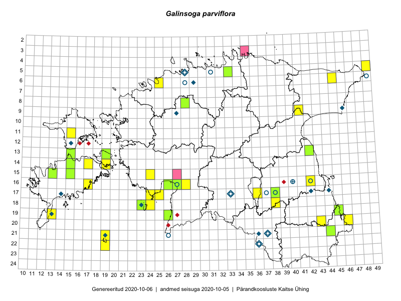

Galinsoga parviflora
Uuendatud: 2016-12-02
Kaardile koondatud taksonid: Galinsoga parviflora Cav.

Kaart põhineb 35 vaatlusel. Taksonit on leitud 18 ruudust.
Kuvatud viited 20 esimesele andmebaasikirjele, ülejäänud PlutoFis
- Tiit Hallikma, Toomas Kukk: 2015-07-22: 05-49: ala
- Rein Kalamees, Kersti Püssa: 2015-07-16: 20-46: ala
- Rein Kalamees, Kersti Püssa: 2015-07-16: 20-46: GPS punkt
- Helle Mäemets, Mare Leis: 2015-06-25: 17-36: ala
- Silvia Pihu: 2015-07-01: 21-19: ala
- Silvia Pihu: 2015-07-01: 21-19: GPS punkt
- Sander Laherand: 2016-07-13: 06-25: GPS punkt
- Ott Luuk, Eerik Leibak: 2016-08-05: 09-41: ala
- Rein Kalamees, Kersti Püssa: 2016-07-20: 17-36: GPS punkt
- Thea Kull, Ott Luuk: 2016-08-23: 18-38: GPS punkt
- Karin Kaljund, Kaire Lanno, Indrek Melts: 2016-07-27: 18-23: ala
- Karin Kaljund, Kaire Lanno, Indrek Melts: 2016-07-27: 18-23: GPS punkt
- Peedu Saar, Ott Luuk: 2016-08-29: 14-17: GPS punkt
- Meeli Mesipuu, Ott Luuk: 2016-09-10: 21-19: ala
- Ott Luuk, Meeli Mesipuu: 2016-09-10: 22-19: ala
- Peedu Saar, Ott Luuk: 2016-09-21: 18-23: GPS punkt
- Peedu Saar, Ott Luuk: 2016-09-21: 18-23: GPS punkt
- Meeli Mesipuu: 2016-09-23: 15-15: ala
- Meeli Mesipuu: 2016-09-26: 14-19: GPS punkt
- Toomas Kukk: 2016-09-25: 19-13: GPS punkt